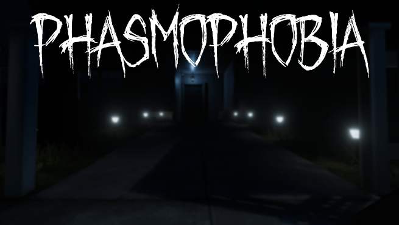

Phasmophobia är en multiplayer skräckspel upp till 4 spelare där man ska gå till ett "haunted house" där det befinner sig en ghost eller nåt varelse vilket spelarnas uppgift är att få reda på vilket sorts ghost det är. I denna spelet finns det flera olika sorts versioner av ghosts, t.ex demons, wraith, phantom osv.
Vågar du gå in och veta vilken ghost som befinner sig inomhus?
Det här huset är besudlat med ett hemskt förflutet. Familjer blev brutalt mördade av sina egna familjemedlemmar, människor blev galna, många begick självmord och andra gräsliga händelser inträffade. Varje rum har sin historia målad på en osynlig duk. Som spelare kommer du att återuppleva delar av detta mörka förflutna och var och ett av fragmenten kommer att göra dig orolig och vettskrämd. Du kommer snart att önska att du kunde följa de döda till deras avgrund, men döden hjälper dig inte att lämna denna plats. Kommer du att springa ifrån det, eller kommer du att försöka avslöja sanningen bakom skuggorna?
Kommer du klara av de läskiga huset och överleva?

Blair Witch handlar om Ellis, en pensionerad polis man bestämde att hjälpa till polisen att leta efter en ung pojke som försvann i en skog som heter Black Hills Forest. Polismanen har också haft problem om sitt liv förut och har problem med att bli lugn och ibland blir stressad. Polismanen letar efter pojken och hittar ledtrådar och spår av denna pojken, men när han går in djupare intill skogen blir han inlåst av en okänd "kraft" och det gör så han tapar kontakt med hans medarbetare.I skogen blir tiden annorlunda och det finns platser som har ovanligt atmosfär. Polismanen har också sällskap med en hund som heter Bullet. Hundens uppgift är att vara med polismanen och ge honom sällskap så att han inte blir stressad.
Kommer han hitta pojken?